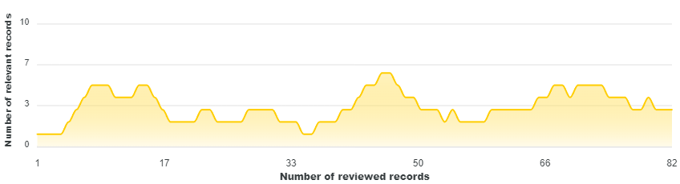
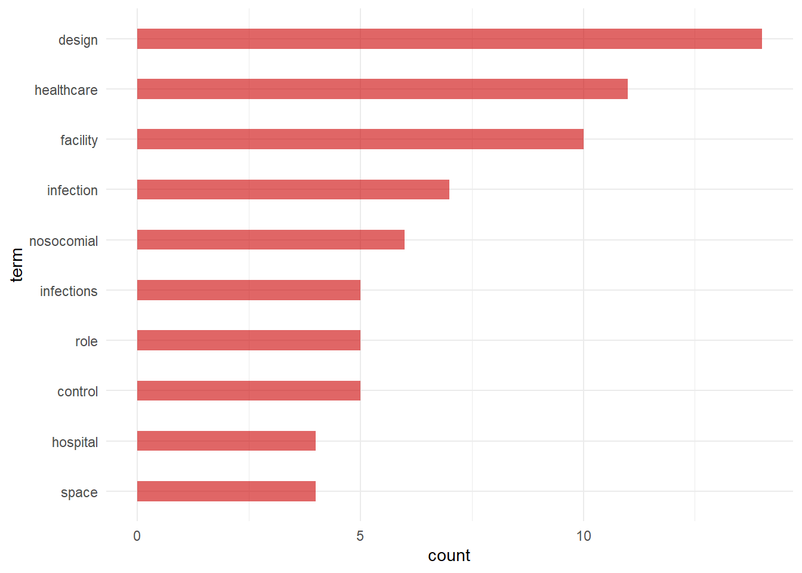

flowchart TB A[Research topic] --> B(Keywords) B --> C[Lit. search on databases] C --> D[Ranking and screening with AS Review] D --> E[Analysis] E --> F(Revised keyword) F --> C E --> G(Evidence synthesis)
Different workflows for rapid evidence gathering
tools
Keyword search
Some notes on how to streamline a research on a specific topic on academic literature using few available free tools. Following a driagram of the process
Define a research question
- My initial interest was on trying to understand the impact of healthcare design and nosocomial infections. I started with few quite general keywords: healthcare facility construction nosocomial. This is not the best choice of keywords but it is likely that at the beginning there is a lack of knowledge and terminology.
healthcare-associated epidemiology nosocomial Evidence Based Relationship Between Healthcare Infrastructure and Nosocomial Infections in Romania Enhancing appropriate environmental design in healthcare facilities for the inhibition of nosocomial infection Facility Design and Healthcare-Acquired Infections Surfaces and fomites as a source of healthcare-associated infections
Literature search
- The selected string for research shown above was searched in several databases using the Publish or Perish software1.In Scopus 23 articles were found, in crossreference 1000 articles,in semantic scholar 811 articles adn in PubMed 11.
- The separate RIS files were imported in Zotero and a new file with all the results from different searches was exported
1 https://harzing.com/resources/publish-or-perish/tutorial
Screening
Screening was done using AS review2 in different steps. At first, article were manually screened. Using the terms “nosocomial AND design” 5 articles out of the 8 proposed were marked as relevant.
Then ASReview started the active learn process on the 1825 papers3 using TF-IDF and Naive Bayes, clustering and dynamic resampling as options.
The model then proposed different papers to be reviewed for relevance. )0 articles were reviewed with 33 found to be relevant. As shown below, the model was suggesting papers with a 30% relevance ( around 3 paper over 10).

The relevant papers (33 then reduced to 30 due to duplication) were then exported.Since this is a manageable number we move to the analysis phase. Another option would be to use this bibliography and repeat from step 3.
2 ASReview, developed at Utrecht University, helps scholars and practitioners to get an overview of the most relevant records for their work.
Analysis
- A first analysis was done to create word-cloud from the titles of the relevant bibliography, see margin column.


- NGRAM
N-Grams
VOS Viewer
Keyword revision
After this first round, and by inspecting the most relevant articles a new set of keywords can be proposed:
Facility Design environmental contamination healthcare nosocomial
Reference list from very relevant articles
Snowbal research method
Another method consists in using the bilbiographic reference of an interesting articles as a starting point.
Lens.org From lens.org the search obtained 248 articles, from PubMed 248articles. Additionally Some website did not
Tools
Article extraction / Google Scholar / after saving in the library, or SerpAPI
https://github.com/rafsanlab/ScrapPaper
Publish or perish https://harzing.com/resources/publish-or-perish/windows
VOS viewer